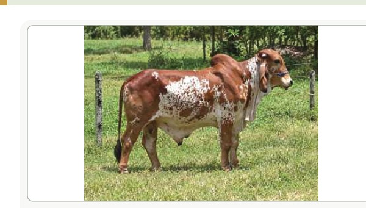

LOTE06
GIR PO
FAZENDA TRIUNFO • ALAGOINHAS / BA
▶ CLIQUE NA FOTO PARA ASSISTIR AO VÍDEO
HAVAL
REGISTRO AGMT 276
Nascimento17/03/2024
SexoMACHO
RaçaGIR PO
VendedorFAZENDA TRIUNFO
Jovem reprodutor Gir PO da Fazenda Triunfo, filho de Edank TE Jabaquara e Quoli FIV. Uma oportunidade para quem busca genética selecionada e potencial de evolução do rebanho.
✦ GENEALOGIA / PEDIGREE
PAIEDANK TE JABAQUARA
MÃEQUOLI FIV
AVÔ PATERNOTABU TE CAL
AVÓ PATERNAHIRANA FIV DE BRAS.
AVÔ MATERNOGABARITO AVLA
AVÓ MATERNAFADA FIV DA TRIUNFO